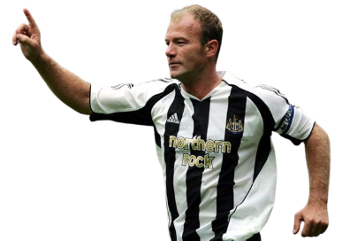
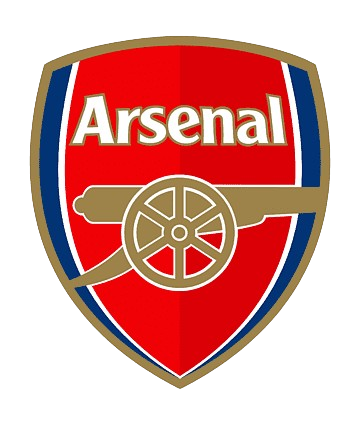
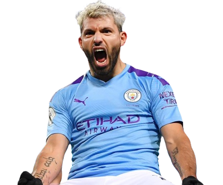

La Premier League es la máxima categoría del fútbol en Inglaterra y es considerada una de las ligas más importantes y competitivas del mundo.
Historia de la Premier League
Para muchos la mejor liga del mundo
A continuacion conoceremos los maximos campeones
y goleadores que tiene esta hermosa liga
Historia de la premier
La Premier League es vista como una de las ligas más emocionantes y de mayor calidad en el mundo, atrayendo a numerosos talentos internacionales.
La Premier League es no solo la cúspide del fútbol inglés, sino también una de las ligas más seguidas y respetadas en el mundo. Su formato competitivo, junto con la participación en prestigiosas competiciones de copa y su importancia en el fútbol europeo, hacen de la Premier League un pilar fundamental en el panorama del fútbol global.
A lo largo de su historia siete clubes han resultado campeones, siendo el Manchester United el equipo más laureado con 13 campeonatos. Chelsea, Arsenal, Manchester City, Blackburn Rovers, Leicester City y Liverpool completan el resto de títulos de las veintinueve temporadas del campeonato.
Maximo ganador de liga

Manchester United con 13 premier leagues🏆
Maximo goleador de la Premier League

260 goles convertidos⚽
Maximo ganador de la F.A Cup

El equipo de Londres cuenta con 14 copas nacionales🏆
Maximo ganador de liga

Sergio "Kun" Aguero marco 184 goles con el Manchester city⚽